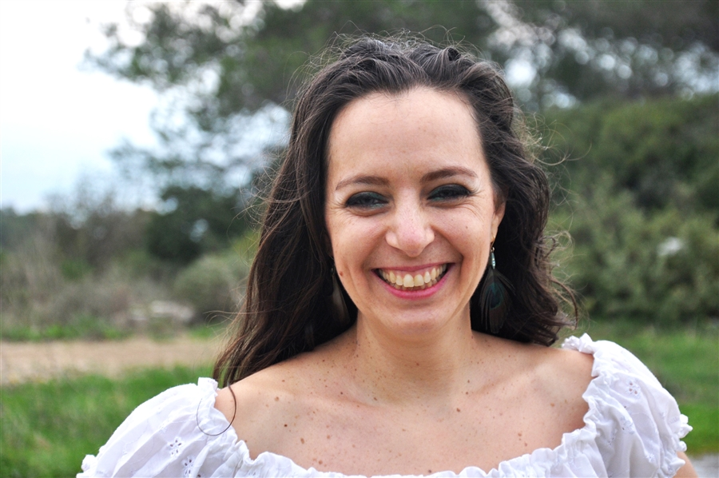

מעיין בן דוד
מנחת סדנאות תנועה, ריקוד ויצירה, עם ניסיון של למעלה מ-25 שנה.
בוגרת תואר ראשון במחול ותעודת הוראה מהאקדמיה למוסיקה ולמחול בירושלים.
יוצרת "חדר משלנו" – בית נשי לתנועה וליצירה,
ויזמת "החצר של סבא וסבתא" – מיזם חברתי בין-דורי.
